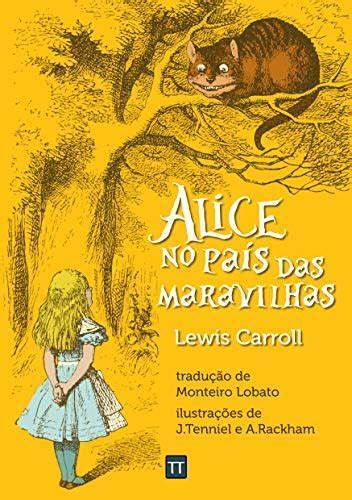
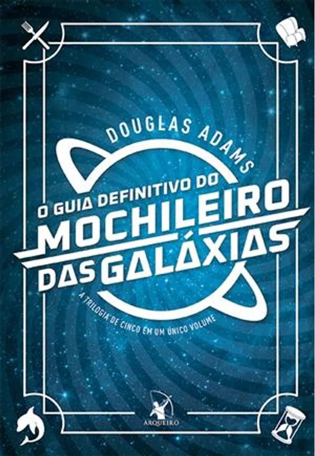

Percy Jackson e o Ladrão de Raios

Sinopse
Primeiro volume da saga Percy Jackson e os olimpianos, O ladrão de raios esteve entre os primeiros lugares na lista das séries mais vendidas do The New York Times. O autor conjuga lendas da mitologia grega com aventuras no século XXI. Nelas, os deuses do Olimpo continuam vivos, ainda se apaixonam por mortais e geram filhos metade deuses, metade humanos, como os heróis da Grécia antiga. Marcados pelo destino, eles dificilmente passam da adolescência. POUCOS CONSEGUEM DESCOBRIR SUA IDENTIDADE.
fonte: Google Books
| Data da primeira publicação | Autor | Idioma original | Gêneros |
|---|---|---|---|
| 28 de junho de 2005 | Rick Riordan | Inglês | Mitologia grega, Romance, Ficção juvenil |
O Senhor dos Aneis: Sociedade do Anel

Sinopse
A imaginação prodigiosa de J.R.R. Tolkien e seu conhecimento profundo das antigas mitologias da Europa permitiram que ele criasse um universo tão complexo e convincente quanto o mundo real.
fonte: Google Books
| Data da primeira publicação | Autor | Idioma original | Gêneros |
|---|---|---|---|
| 28 de julho de 1984 | J.R.R Tolien | i Inglês | Literatura Fantástica |
Alice no País das Maravilhas
Sinopse
Alice é despertada de um leve sono ao pé de uma árvore por um coelho peculiar. Uma criatura alva e falante com roupas engraçadas, que consulta seu relógio e reclama do próprio atraso.
Curiosa como toda criança, Alice segue o animal até cair em um buraco sem fim que mudou para sempre a literatura infantil. Mais de 150 anos depois, Alice no País das Maravilhas continua repleto de ensinamentos para aqueles que ousaram seguir o Coelho Branco até sua toca.
fonte: Google Books
| Data da primeira publicação | Autor | Idioma original | Gêneros |
|---|---|---|---|
| Novembro de 1865 | Lewis Carroll | Inglês | Literatura infantil, Literatura Fantástica, Literatura nonsense |
O Guia do Mochileiro das Galáxias
Sinopse
“E então, uma quinta-feira, quase dois mil anos depois que um homem foi pregado num pedaço de madeira por ter dito que seria ótimo se as pessoas fossem legais umas com as outras só pra variar, uma garota, sozinha numa pequena lanchonete em Rickmansworth,
de repente compreendeu o que tinha dado errado todo esse tempo e finalmente descobriu como o mundo poderia se tornar um lugar bom e feliz. Desta vez estava tudo certo, ia funcionar, e ninguém teria que ser pregado em coisa
Infelizmente, porém, antes que ela pudesse telefonar para alguém e contar sua descoberta, aconteceu uma catástrofe terrível e idiota, e a ideia perdeu-se para todo o sempre.
Esta não é a história desta garota.
É a história daquela catástrofe terrível e idiota, e de algumas de suas consequências.”
fonte: Google Books
| Data da primeira publicação | Autor | Idioma original | Gêneros |
|---|---|---|---|
| 12 de 1979 | Douglas Adams | Inglês | ficção científica, Romance, Humor, Ficção científica cômica |